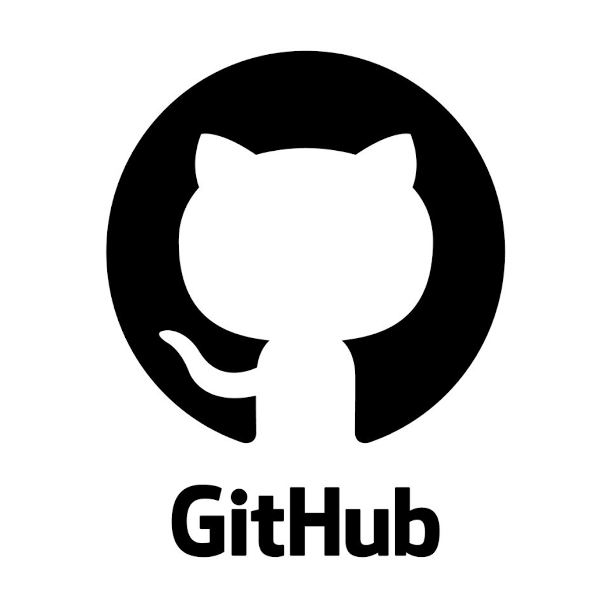
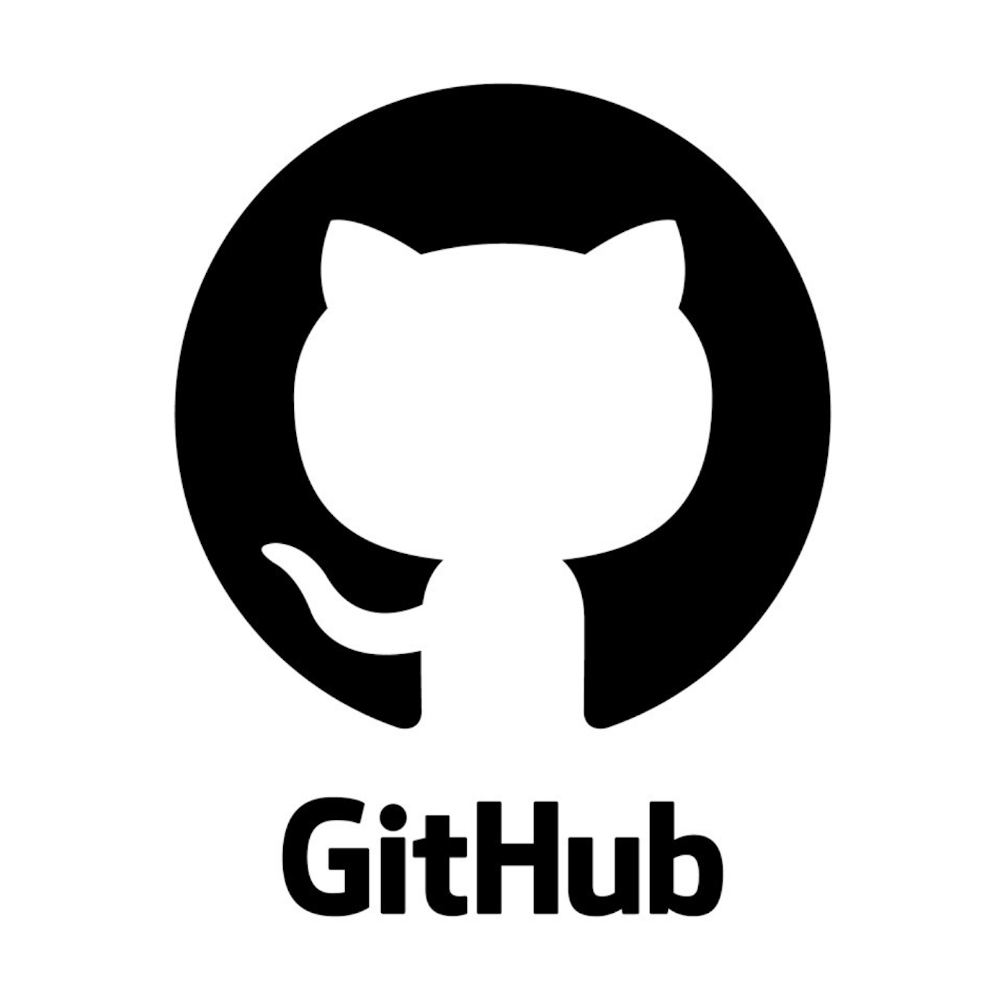

About Me
Projects

About Me
Projects
Description: (IN PROGRESS) My goal with this project is to put my algorithm thinking skills to a test in order to make my Apartment Director's job easier. They have to get the availability of all 29 RAs on staff and make a finals week schedule that works for everyone. I'm making it so they just need to get the availability, format a desired schedule outline, and my algorithm will find a valid schedule utilizing DFS. While I'm at it, I'm adding in the ability to just make a schedule given desired skill levels per task since it's occasionally desired to have returners complete more important tasks. I've learned how even in non-STEM jobs, there's all kinds of ways to implement Computer Science.
Tech Stack:
Description: This app was designed by me and 3 teammates for my COMS 309 course in the Spring of 2023. It was utilized as a bathroom hub for people to locate bathrooms, rate bathrooms, and submit service requests. The idea was to help visitors know which bathrooms were nice and which ones to avoid. By participating in this project, I became a very good team member as there was a lot of dependence on each other and trying to fix things together.
Tech Stack:
Description: My final for my Web Development class involved making an interactive website with a database. As a card game player, I love knowing what's in my collection digitially. That way I don't have to guess if I have certain cards or try to look for them. With this, we utilized CRUD to keep track of the collection and a Mongo database since there was no necessary relation amongst the cards. This project showed me all the amazing capabilities within web development and ultimately gave me a lot of interest in pursuing this as a career.
Tech Stack:
Description: The Pokemon Roguelike game was a projected developed in SEVERAL iterations over the course of the Fall 2023 semester. It started with C and just generating basic maps and movements. Then, around week 9 we transitioned all the code to C++ and made it where you could interact with Pokemon and conduct battles. This project taught me perseverence as there were often errors I got stuck on and had to just keep pushing through each week without giving up on the challenge.
Tech Stack:
Description: My final for the same class where we programmed the Pokemon Roguelike, I decided to make my favorite computer game of all time... Minesweeper! There were some specifications for the project, so it had to be a game. But I'm proud of the fact that I successfully replicated the game utilizing a queue for the auto-generation of surrouding blocks. Despite being a mini-project, I still learned how you can work with any interest in your life to make a really cool project.
Tech Stack: